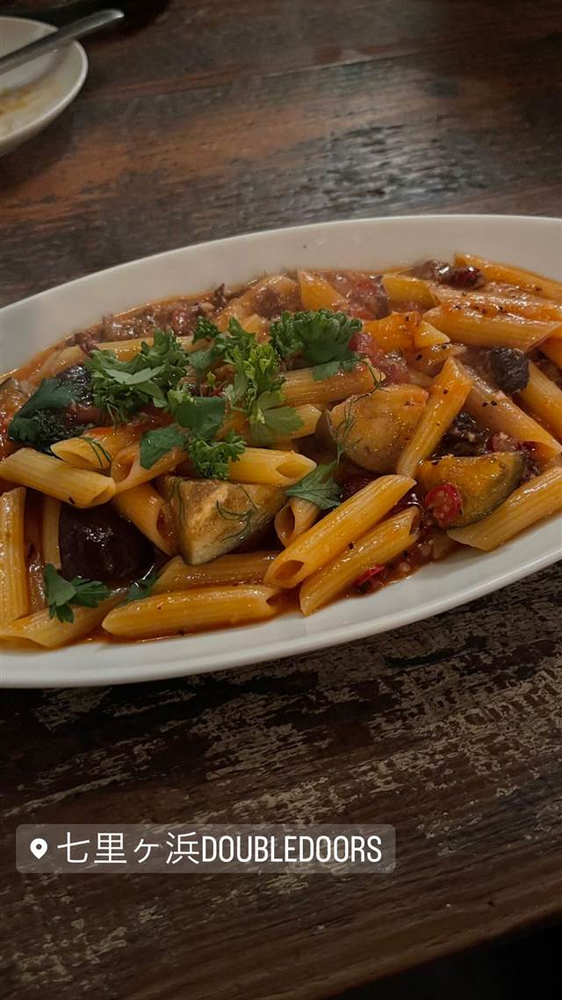
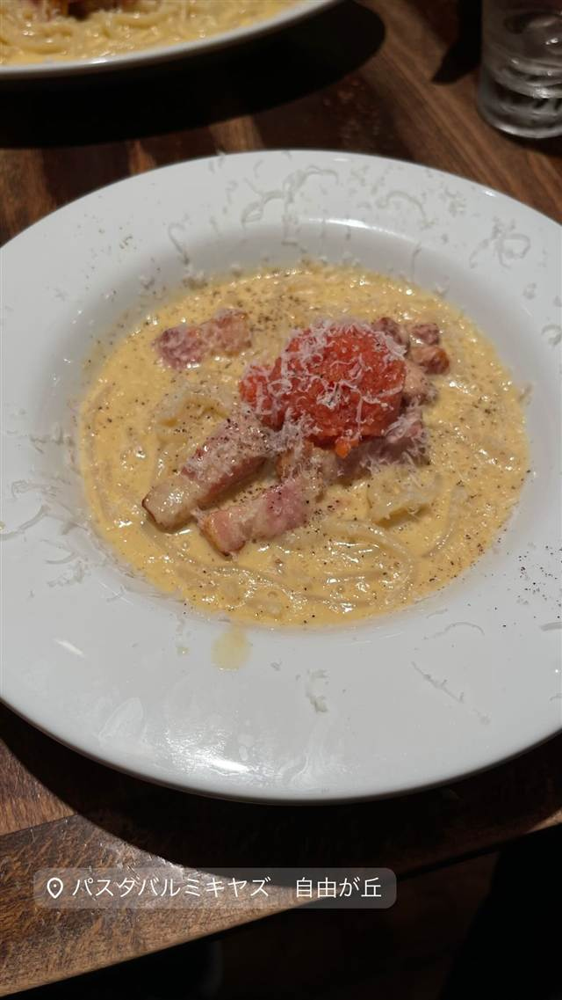
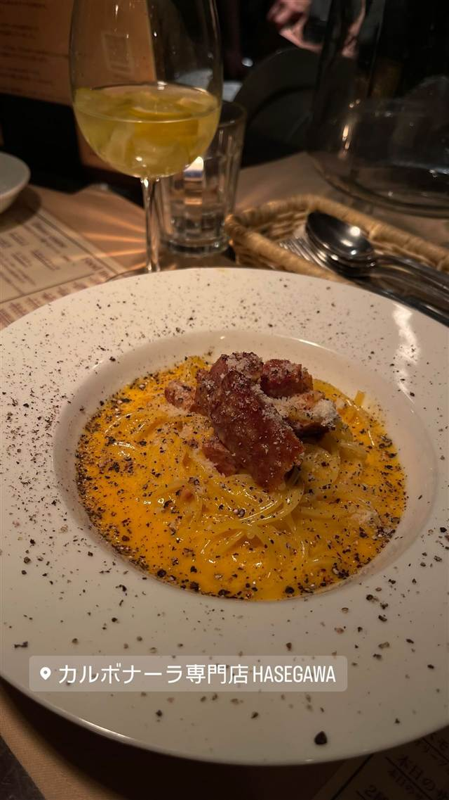

Arancino di Mare
ハワイ最高のイタリアンに選ばれた、直輸入食材のパスタ
Arancino Di Mare
ワイキキビーチ・マリオット・リゾート&スパ1階にある、Arancino系列の旗艦イタリアンレストラン。2004年の開業以来、イタリアから直輸入した食材を使った料理でホノルルマガジン等の「ベストイタリアン」に選ばれている。
TRIVIA
豆知識
- ハワイに3店舗を展開するArancinoグループの旗艦店として2004年に開業した
REVIEWS
世間の評判
3.59食べログ
生ウニパスタの濃厚さとテラスの眺め
- 生ウニを使ったパスタの濃厚でクリーミーな味わいを評価する声が多い
- テラス席からの開放的な眺めやリゾートらしい雰囲気を評価する声が多い
- リゾート内の価格でやや高めだと感じ気軽には行きにくいという声がある
- 予約なしでは長時間並ぶこともあり予約をしていく方が安心という声がある
食べログ 口コミ221件
| 創業 | 2004年開業（旗艦店） |
|---|---|
| 系譜 | Arancinoグループの一つ。The Kahala店、Beachwalk店と姉妹関係 |
| 看板 | 魚介のパスタなどイタリア料理 |
| こだわり | イタリアから直輸入した食材を使用した料理 |
| 掲載・評価 | ホノルルマガジン「Hale 'Aina Awards」およびホノルル・スターアドバタイザー紙でハワイ最高のイタリアンレストランに選出 |
| どこから | 海外 |
| 予算 | 昼 ¥2,000～¥2,999 夜 ¥15,000～¥19,999 |
| 定休日 | 無休 |
| 予約 | 予約可 |
| 場所 | ワイキキ 米国ハワイ州ホノルル ワイキキ・マリオット・リゾート&スパ1F（Ohua Ave） |
| メモ | ワイキキビーチ・マリオット・リゾート&スパ1階にあり、屋外(アルフレスコ)ダイニングも可能 |
食べたもの：チーズパスタ調理
NEARBY
近い店・同じ系統の店
-
 パスタ 三軒茶屋駅
トラットリア ピッツェリア ラルテ（Trattoria e Pizzeria L'ARTE）
ビブグルマン掲載、ピザ百名店4度選出のVPN認定ナポリピッツァ
昼 ¥3,000～¥3,999 夜 ¥8,000～¥9,999
パスタ 三軒茶屋駅
トラットリア ピッツェリア ラルテ（Trattoria e Pizzeria L'ARTE）
ビブグルマン掲載、ピザ百名店4度選出のVPN認定ナポリピッツァ
昼 ¥3,000～¥3,999 夜 ¥8,000～¥9,999
-
 パスタ 麻布十番
Grill & Pasta es 麻布十番
六本木Ajitoの姉妹店、特製グリルで焼く牡蠣グラタン
昼 ¥1,000～¥1,999 夜 ¥4,000～¥4,999
パスタ 麻布十番
Grill & Pasta es 麻布十番
六本木Ajitoの姉妹店、特製グリルで焼く牡蠣グラタン
昼 ¥1,000～¥1,999 夜 ¥4,000～¥4,999
-
 パスタ 恵比寿
BANDERUOLA-Cuscusseria-バンデルオーラ
シチリア・トラーパニ郷土料理クスクスを専用の器で蒸す製法を再現する専門店
昼 ¥1,000～¥1,999 夜 ¥6,000～¥7,999
パスタ 恵比寿
BANDERUOLA-Cuscusseria-バンデルオーラ
シチリア・トラーパニ郷土料理クスクスを専用の器で蒸す製法を再現する専門店
昼 ¥1,000～¥1,999 夜 ¥6,000～¥7,999
-

パスタ 江ノ電七里ヶ浜駅 DoubleDoors 七里ガ浜店（本店） 相模湾を望むテラス席で味わうズワイガニのトマトクリームパスタ 昼 ¥2,000～¥2,999 夜 ¥3,000～¥3,999 -

パスタ 自由が丘 パスタバル MiKiYA's 自由が丘 モンスーンカフェを育てた元取締役が作る自家製生パスタ 昼 ¥1,000～¥1,999 夜 ¥3,000～¥3,999 -

パスタ 飯田橋 カルボナーラ専門店 ハセガワ 神楽坂（HASEGAWA） 卵とチーズの配合を何千回も試作し昆布と鰹節の出汁を隠し味にする 夜 ¥3,000～¥3,999